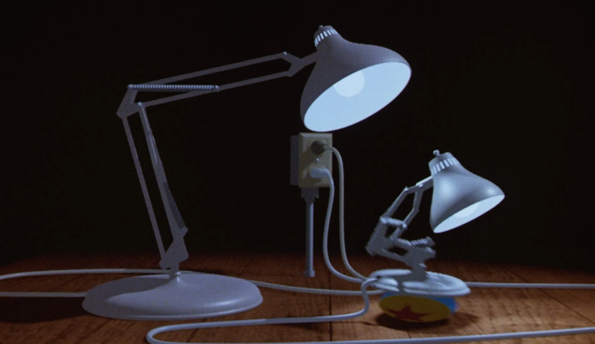
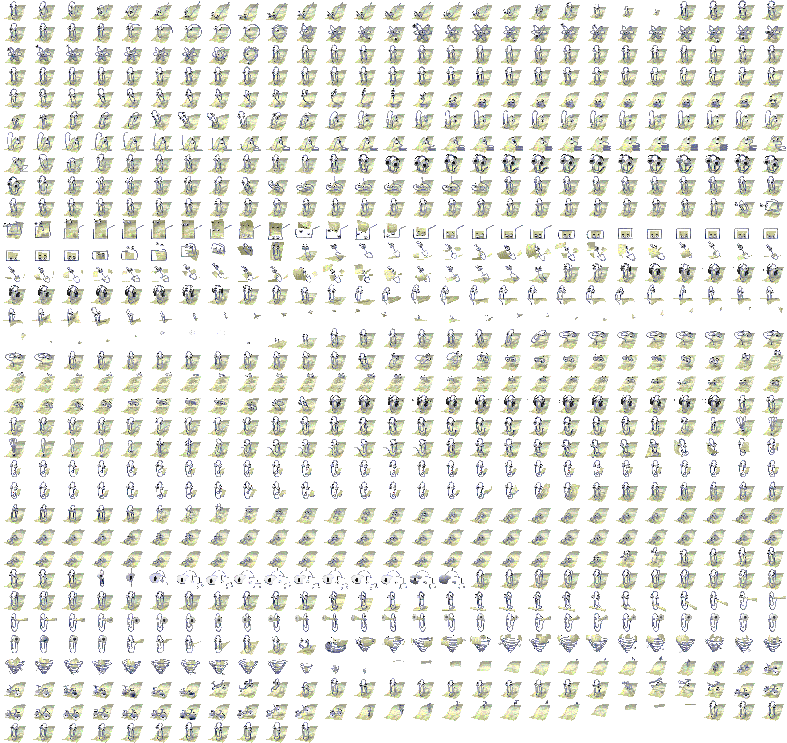
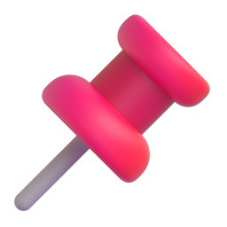
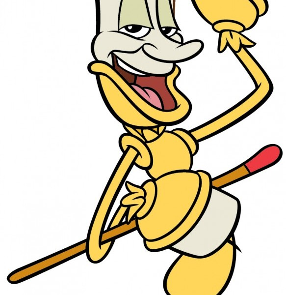

只比较真实可见的“形、线、色、质、构成”与“人格化发生在哪里”。不命名车道，不写评价词，不写伪精确数值。旧参考板 references/visual/board.html 已封存，本板为 DA-01 本轮专属：references/visual/concept-a-desk-objects/。
要 01 的无脸姿态 + 03 的扁平色块、要 02 的加脸/肢体机制 + 05 的金属/蜡质。每格已写清“看见了什么”与“人格化在哪里”，便于跨格混搭。




references/visual/concept-a-desk-objects/board.html · 评审图 board.svg（可直接用浏览器打开）· 来源记录 sources.md · 冻结记录 concepts.md Form 3.2、brief.md